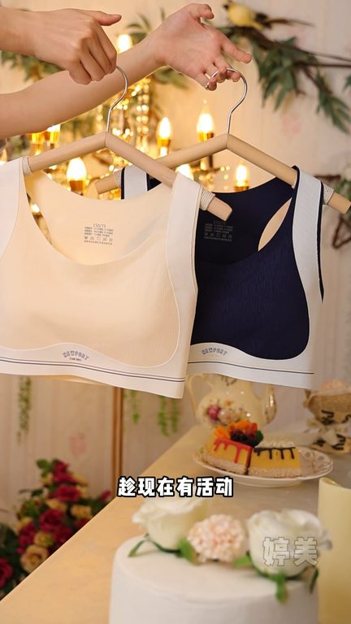

TOP 1 · 代表素材深度拆解
核心放量 稳健
视频为原始素材 HTTPS 链接；点击后加载，建议在网络环境良好时播放。
15.1万素材消耗
1.50%CTR
100.0%类目消耗占比
+0.00pp较类目均值
表现判断
该素材是类目内第 1 名，属于“核心放量”；CTR 高于类目均值。消耗体现承接规模，CTR 体现首屏与定向效率，两项应结合判断，不能仅以单指标下结论。
表达标签
口播三段式证据
开场钩子15岁了还在穿小背心啊快阻止她你女儿发育都这么明显了你还在给她穿这种基础小内衣啊她会影响发育的发育期的少女真的不可以乱穿内衣
中段论证平美这款专为发育期少女设计的调整型内衣穿上真的很舒服它是对比了很多家孩子认可的给孩子一般12岁来月经之后呢乳线的发育就会加快这个时候当妈的可得上点心千万不要像我一样等孩子胸部外扩了才想起给孩子塑形闺蜜推荐入手了这家少女定型运动内衣这件内衣专为青春期的女儿设计
结尾转化闺蜜推荐入手了这家少女定型运动内衣这件内衣专为青春期的女儿设计高弹力加宽底围舒适安全的同时支撑力比钢圈还强固定一体的少女背大胸显小背背加提拉定型纠正不良姿势我女儿穿上真的很喜欢趁现在有活动可以多背两件换着穿
有效点
- CTR 1.50% 高于类目均值 1.50%，开场或人群指向具备点击优势
- 包含使用或实测表达，能够把抽象卖点转化为可感知证据
迭代动作
- 保留当前高效钩子，复制 3 个变量版本：人物、首句和首帧分别单变量测试
- 中段每 5–8 秒补一次画面变化或证据点，避免同景口播造成信息疲劳
- 促销口径与资质信息保持同屏可验证，结尾只保留一个明确行动指令
合规关注
钩子建立 · 2.1s
场景/问题展开 · 16.1s
卖点证据 · 37.0s

转化收口 · 50.9s
查看完整口播摘要
15岁了还在穿小背心啊快阻止她你女儿发育都这么明显了你还在给她穿这种基础小内衣啊她会影响发育的发育期的少女真的不可以乱穿内衣千万别等孩子寒胸脱背胸部外扩了后悔可就晚了平美这款专为发育期少女设计的调整型内衣穿上真的很舒服它是对比了很多家孩子认可的给孩子一般12岁来月经之后呢乳线的发育就会加快这个时候当妈的可得上点心千万不要像我一样等孩子胸部外扩了才想起给孩子塑形闺蜜推荐入手了这家少女定型运动内衣这件内衣专为青春期的女儿设计高弹力加宽底围舒适安全的同时支撑力比钢圈还强固定一体的少女背大胸显小背背加提拉定型纠正不良姿势我女儿穿上真的很喜欢趁现在有活动可以多背两件换着穿